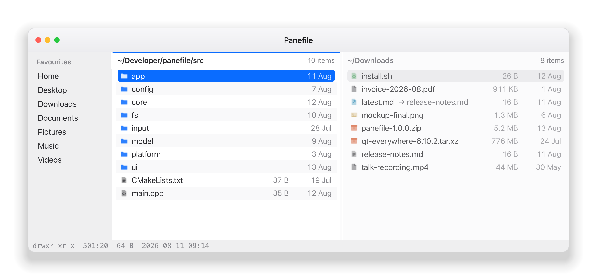

One window. As many directories as you need.
Panefile is a keyboard-driven file manager for Linux and macOS. Instead of a window or a tab per location, one window holds any number of independent directory panels side by side — each with its own path, cursor, history, sort order and filter.

Five minutes, start to finish
Copying files between two folders, without a second window and without the mouse. Every key below is remappable.
- j k to a subfolder, l to go in Arrow keys work too, and h goes back up.
- v to start selecting, then j five times Selection mode: movement extends the selection. The panel header says how many.
- ⌘C to copy Ctrl+C on Linux — one binding, right on both. ⌘X cuts instead.
- n for a second panel It opens beside the first, not on top of it. N would duplicate this one instead.
- Tab to move between panels The focused panel has a coloured border — the one thing the design never lets you lose track of.
-
⌘N, type
photos/, Enter The trailing slash makes it a folder. Without it you get a file. - l to go into it, ⌘V to paste The copy runs in the background with a progress bar. Conflicts ask, once, with an “apply to all” option.
- v, select them all, ⌘B to rename in bulk Find and replace, add a prefix or suffix, or number them — with every old → new pair shown before anything is renamed.
- ⌘W to close the panel Never the last one. ⌘Z undoes the move, the rename, or the trash — though not the copy, which is a thing that only ever added files.
Lost? ? lists every action and its keys. Esc backs out of whatever you are in — a preview, a filter, selection mode — and never quits.
Panels, not tabs
Panels are peers. None of them is the parent of another, and none of them is a preview of another — which is what separates this from Miller columns. Copying between two directories means putting them side by side and pressing two keys, never dragging a window across a screen.
Up to ten at once
Create, split, close and cycle with single keystrokes. Below 400 px of width only the focused panel is shown, so it still works in a quarter-screen tile.
Independent state
Each panel keeps its own working directory, cursor, selection, history, sort order and filter. Splitting one copies its path and sort but deliberately not its selection.
Quick Look
Space opens a rich preview of the cursor item. The arrow keys still move the panel cursor while it is open, so you can hold j and flick through a folder of photographs.
Two searches
/ filters the directory you are in as you type. Ctrl+F walks the whole subtree on a worker thread and streams matches in, ranked.
Rename in bulk
Find and replace, add a prefix or suffix, or number a selection — with every old → new pair previewed live. Swapping two files' names works, because cycles are broken with a temporary.
Undo
Moves, renames, bulk renames and trashing are undoable. Copying and permanent deletion are not, and say so in the confirmation rather than pretending otherwise.
Fast enough to leave closed
A file manager you keep open because it is slow to start is a file manager that is always in your way. Panefile targets a painted window in under 80 milliseconds, and every release measures it — a build that regresses more than 15% against the recorded baseline fails.
Nothing eager
The syntax highlighter, the media backends, the D-Bus connection, every modal and every preview renderer are built on first use. A session that never previews a file never pays for one.
Nothing blocking
Every stat, read, copy, hash and thumbnail happens off the GUI thread. A 100,000-entry directory streams in as it is scanned rather than appearing all at once at the end.
Nothing hidden
The dynamic dependency list is checked on every build. A new load-time dependency is the most common way a program quietly gets slower to start, so it fails the build instead.
Everything from the keyboard
The mouse is supported and never required. Bindings are sequences of chords, so gh and dd work alongside Ctrl+C, and every one of them is remappable in a plain text file.
| Keys | Action |
|---|---|
| h j k l | Move, enter, go up — arrow keys work too |
| n / N | New panel, or duplicate this one |
| Tab | Next panel |
| Space | Quick Look — Ctrl+Space cycles where it docks |
| v | Selection mode — movement then extends the selection |
| / | Filter this directory — \ clears it, and so does Esc |
| Ctrl+F | Find anywhere below here |
| Ctrl+C / X / V | Copy, cut, paste — Command on macOS |
| Ctrl+N | New file, or folder with a trailing / |
| Ctrl+B | Bulk rename the selection |
| Ctrl+A / E | Create an archive, extract one |
| Ctrl+Z | Undo a move, rename or trash — a copy is not undoable, and says so |
| Esc | Back out of a preview, a filter, or selection mode — never quits |
| Ctrl+W / Q | Close the panel, quit |
| gg · gh · gr | Top, home, root — g is the “go” prefix, and yours to extend |
| ? | Every binding, in a modal |
Themed in plain text
Twenty-three themes ship with it, all of them the real published palettes rather than approximations. Colours, spacing, row height and font are TOML; edit the file and the window restyles without restarting.
# ~/.config/panefile/theme.toml
[colors]
background = "#1e1e2e"
text = "#cdd6f4"
accent = "#89b4fa"
directory = "#89b4fa"
[ui]
row_height = 24
panel_padding = 8Install
Arch Linux
From the AUR. The package pulls in every optional dependency, so a plain install is a full-featured one.
yay -S panefilemacOS
A real second platform, not a port shim: native paths, FSEvents, DiskArbitration and an app bundle.
brew install andyjeffries/tap/panefileFrom source
Qt 6.7 or newer, CMake 3.25, a C++20 compiler. Nothing else is required; the optional pieces degrade gracefully.
cmake --preset release
cmake --build --preset releasePanefile is developed and tested on Arch + Hyprland and on macOS. X11 is best-effort. There is no hard dependency on any compositor.